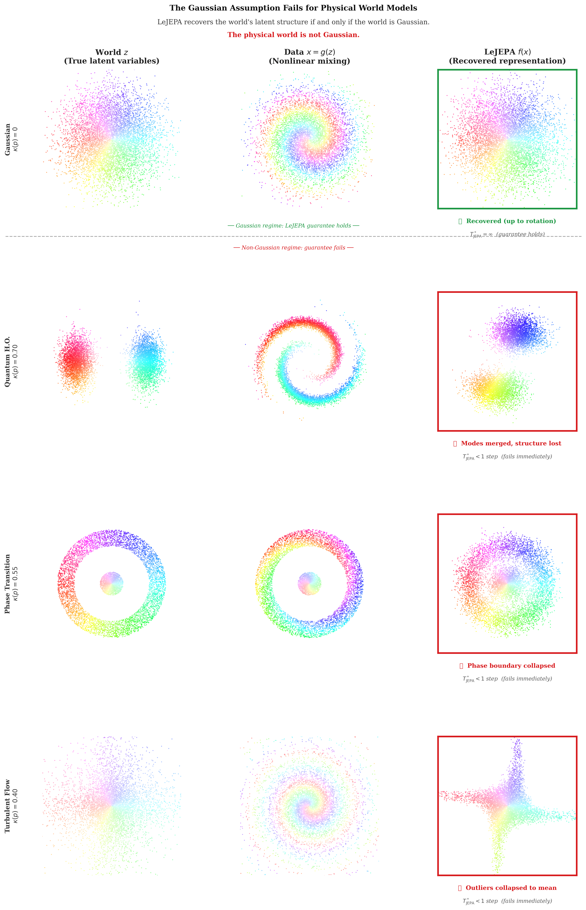
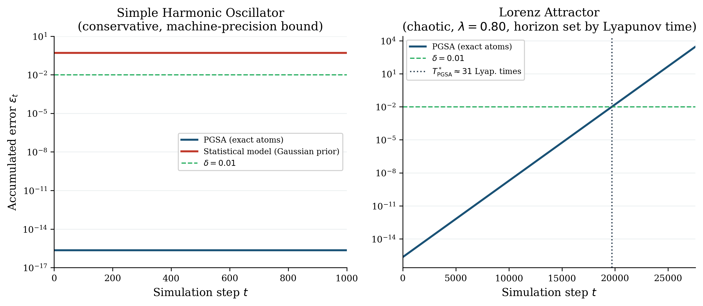

Formalizes the algebraic cores of four theorems on symbolic world-model identifiability in Lean 4 with Mathlib4 (zero sorry).
Abstract
Klindt, LeCun, and Balestriero (arXiv:2605.26379) proved that Joint-Embedding Predictive Architectures (JEPAs) achieve linear identifiability, the linear recovery of the world's true latent variables, if and only if the world's latent dynamics follow a Gaussian, stationary process. This Gaussian boundary implies a fundamental limit on temporal consistency: for any non-Gaussian physical system, the representation error of a statistical World Model grows monotonically with time. We prove that this limit is an artifact of the statistical alignment mechanism, not a property of World Models in general. We introduce the Physics-Grounded Symbolic Architecture (PGSA) and prove three results: (1) a PGSA achieves exact linear identifiability for all physical regimes, regardless of the latent distribution; (2) the per-step error of a PGSA is bounded by numerical precision alone; and (3) as a direct consequence, a PGSA maintains temporal consistency for an unbounded number of transitions, a property we term near-infinite temporal consistency. We further prove that statistical World Models cannot achieve this property for any non-Gaussian system, regardless of model capacity or the volume of training data. The algebraic cores of four of the theorems are formalized in Lean 4 with Mathlib4 v4.31.0 (zero sorry placeholders); the Klindt et al. converse is taken as an external premise. The contrast establishes that symbolic grounding in the causal generator of the world's dynamics is the sufficient condition and, in non-Gaussian regimes, the only condition for near-infinite temporal consistency.
Problem
Prior work proved that JEPAs achieve linear identifiability only when latent dynamics are Gaussian and stationary, implying that statistical World Models lose temporal consistency for any non-Gaussian physical system.
Approach
The authors introduce a Physics-Grounded Symbolic Architecture (PGSA) and prove that it achieves exact linear identifiability for all physical regimes, that its per-step error is bounded by numerical precision, and that it maintains temporal consistency over unboundedly many transitions. They also prove statistical World Models cannot achieve this for any non-Gaussian system. The algebraic cores of four theorems are formalized in Lean 4 with Mathlib4 v4.31.0 (zero sorry placeholders), with the prior converse taken as an external premise.

Figure 1 : The Gaussian Assumption Fails for Physical World Models: a Direct Comparison. Each row shows a physical system’s true latent distribution (World z ), the nonlinearly mixed observation (Data x=g(z) ), and the representation recovered by a LeJEPA-style model ( f(x) ). Top row (Gaussian): the guarantee of Klindt et al. [ 1 ] holds: the recovered representation is a linear rotation of the t
Results
PGSA error stays bounded across paradigms while statistical-model error grows with time, and the four Lean-formalized algebraic results compile without sorry.

Figure 2 : Temporal error growth by World Model paradigm. The PGSA error stays bounded by machine precision, while statistical models diverge. Simulation steps on the x -axis; temporal error \epsilon_{t} (log scale) on the y -axis.